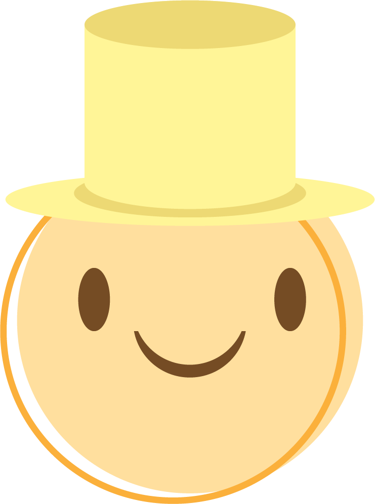
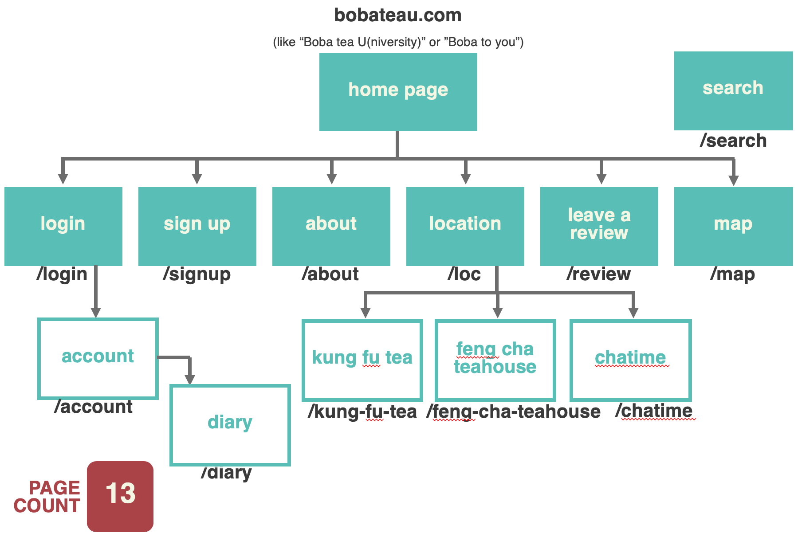
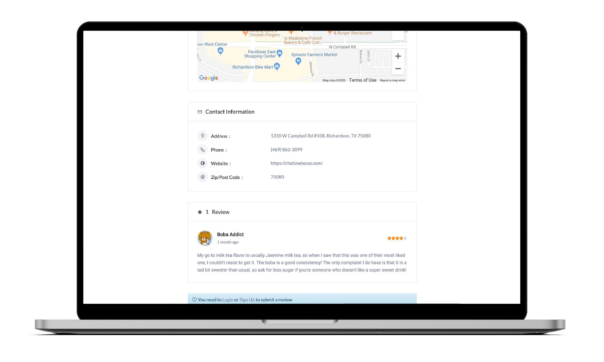

Helping local boba addicts find their favorite boba shops & drinks near campus
In this day and age, boba tea places have been booming in the U.S. There is a copious variety of boba drinks available -- the most common concoction includes a tea base combined with milk or fruit, usually prepared over a bed of sweet boba pearls.
Menu options can be extensive, and drinks generally go from $3 up to even $6, so how is a student supposed to choose the perfect drink without wasting their hard-earned money?
This project was done for my Internet Studio course at UTD. My professor, Ken Starzer, provided feedback along the way.
Create a platform where users can create an account, look up boba tea places near them, view menus, and leave reviews of the place and drink options. In addition, they can recommend drinks they like to others, customize what they usually get (amount of ice, amount of sugar, etc.), what type of boba person they are, and more. It will integrate Google Maps to guide the user to the boba place since most people are already familiar with the site.
Web Developer
Sept 2019 - Dec 2019
Competitve Researching, Wireframing
Adobe XD, Google Analytics, HTML, CSS, WordPress
Note: This is only the screenshots of the first implementation of the WordPress website I took down in December 2019. It does not highlight all the concepts I wanted to implement on the website due to complications with my original idea.
I surveyed my target audience, high school through college students, and began by creating a primary user persona that would use this website:
The second goal I needed was to see what was already on the market, since it was extremely hard to believe that no one had ever considered creating a solution to address my problem.
Two websites immediately came to my mind: Yelp and Google Maps. Although these didn't contain the niche concept I had in mind, they were review aggregators that featured a variety of local businesses. Parsing through the Google Play store, I found that this concept has already been explored before as an app:
Two apps had similar ideas. These apps were also created for specific areas, similar to how I wanted mine to be. However, the takeaway was that I had two main goals to differentiate my website from these competitors:
My main selling point was to have an area I called the "boba diary" where users could record all of their drink customizations in one place. In addition, users who didn't know any drinks at a certain location could choose from the top three popular drinks selected from the diary and how other users reviewed them.
Next, I analyzed and further refined my idea using the six thinking hats methodology. As defined by The de Bono Group, the six thinking hats methodology is a simple, yet effective parallel thinking process that helps people be more productive, focused, and mindfully involved. This methodology separates thinking into six clear functions and roles. I summarized and split each hat into sections under the two hats I thought correlated most with each other.
With BobaTeaU, users can look up boba tea places to see where they're located, directions on how to get there, along with reviews about the location itself and reviews about individual drinks. Users can keep track of drink flavors and customization options they like and don't like via their reviews that other users can see. Its primary audience is for students who like going to places off-campus, like boba tea shops, and who tend to study and hang out with their friends.
The boba tea industry is currently booming with shops constantly opening all over UTD; therefore, having this website will be perfect for boba tea lovers. The success of this website will be measured by the amount of people who sign up and use BobaTeaU.
The most difficult part about getting this website to come together is the aggregation of data. For example, how would I accumulate all the information about the different drink options if each store menu varies? And, how much user input and menu data can I store on my web hosting server?
This should be solved by keeping the initial implementation small and focused around the UTD area. There are also concerns about what counts as a "boba tea shop" as many places, like Taiwan Cafe, offer food and boba tea. I will solve this issue by only including shops that primarily market themselves as "boba tea shops."
This website's competitors are Yelp and Google. However, its niche is boba. The main attraction is the diary option and ratings for individual drinks, as Yelp and Google don't offer those specific options. There's no need to ask for recommendations from people who don't share similar tastes with you.
You can see what people customize their drinks with -- sweetness, ice level, and other adjustments -- with similar tastes. In addition, getting boba is already a social thing that many people, especially high school and college students, enjoy. With BobaTeaU, it'll grow even more as people can connect and share their opinions, find more information, and match their favorite drinks with others online.
After the initial research, the next milestone to work toward was getting a sitemap of the website and creating a wireframe based off of that. Based on my idea, I created a sitemap of what the flow of the website would look like:
I then sketched out competitor wireframes to gain insight on how they laid out their websites:

Because this project was website-only and not an app, I only used the competitors that operated via browser. That consisted of Yelp, Google Maps, and Trip Advisor. There were three concepts that stood out to me via the homepage of these competitors:
I also wanted to integrate Google Maps since it was ideal for a directory website. Besides, why reinvent the wheel?
Using my references, I created wireframes for the homepage, submit review page, results page, and business page on Adobe XD based on my competitor research and how my sitemap was laid out.

Because black milk tea is a common drink offered at all boba tea places, I incorporated a “black milk tea” color scheme onto my website. On the right are some of my initial logo designs before I settled on a white logo. I used the “U” part of the logo for the website’s favicon.
I used a custom theme called "Illdy" to implement my design onto WordPress. I chose this theme because of the simplicity it offered and because it looked most like my wireframes. I also used several plugins to create a contact form, implement directory pages, and integrate Google Maps to each location page.
Since it was difficult to implement the diary page using the plugins I could find, I decided to remove this option and designed BobaTeaU solely as a boba tea shop directory and review site.
Ideally, users can post reviews onto the respective shop’s page with suggestions like “Tell your boba buddies how you customize your drink!” as a placeholder in the review box. Quality reviews of the most popular drinks would idealy be put into the testimonial section or “Find Your Perfect Drink” page where new or curious users can find the backlink to the shop it came from to decide whether they would like to order that for the day.

I was unable to find a way to implement the search bar above the fold on the homepage with this WordPress theme. Therefore, I decided to remove the search page and allow users to see popular drink options via the “Find Your Perfect Drink” button. This page would ideally lead to another page that gathered the most popular items from user reviews.
The homepage was the area where I made the most changes. I added in a "Featured Reviews" section that would show users landing onto the page what people were saying about their drinks and how the reviews were formatted. There was also a "Trending" area where users could see what drinks were popular among other members.
Full drink menus were added for all of the stores, plus topping and customization options. This way, users could see the full menu without distortion on the page before ordering.
As I was creating the final design of the website, I explained the concept of my website to three other students in my classroom, requested them to explore the website, and asked them their thoughts about it.
They liked the overall color scheme and font choices for the site, as well as the concept of the “Find your perfect drink” button. The addition of the integrated Google maps and contact info under each location stood out to them. One of them compared it to a more niche version of Yelp. They also liked the “Other Boba Tea Shops” portion for recommendations.
Unfortunately, the “Find Your Perfect Drink” page was severely empty without many drinks added. There was also a button that redirected back to the homepage which seemed meaningless. One suggested to use this space to promote the top drinks across all locations of boba places to have a section for the less educated boba drinkers to look and read more reviews. This would additionally aid with the overall flow of this page and complete the search page.
Furthermore, the design didn’t have a reviews section since my idea consisted of a diary page that users could record their personal drinks in. However, it was difficult to implement that page. Therefore, my classmates suggested to add a public reviews section.
Although I am familiar with WordPress, this was a challenging project because I was designing my own product. Because of this, I had to research which plugins would work with my website idea and what the limitations of implementing and hosting a webpage WordPress were. Research played a crucial part in my design process and set the foundations for my ideas.
If time constraints were not an issue and if I had more knowledge on how to manipulate a WordPress design from the backend, I would have liked to implement the diary option so users could easily track their favorite boba tea customization options and other users could use those as references. In addition, I would have also liked to implement the “Top 3 Drinks” idea I had on my wireframe on a locations page.
[Update 01/19] After presenting this project to the class, I received feedback and have decided to further my design and go back to redesign some aspects of the website into an app. I also wanted to do more research to further figure out what my target audience would be and what they would expect from this product. Bobateau Version 2.0 is coming in app form, so please stay tuned!